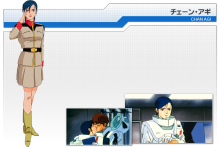
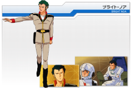
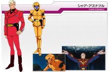

“一年战争”期间，作为Newtype觉醒，乘搭“高达”（RX-78）与吉翁军战斗。 此后多次活跃在联邦于吉翁的战争当中，由于在经历里“一年战争”后，对于战争感到厌恶，希望能够阻止战争，在面对“夏亚的反叛”时， 终于明白，至少在目前，只要夏亚还活着，联邦和吉翁就难以迎来和平相处的结局。义无反顾的担任起了联邦军最先进高达-“V”高达的驾驶员。

为阿姆罗的同居女友，后来两人在漫长的生活中，习惯了互相依靠 两人后来结婚，并由子嗣。

时任隆德·贝尔的司令，再次与阿姆罗等昔日战友，投身至于吉翁势力对抗的战争当中

《机动战士高达》系列中的传奇人物，有幼年时期为了躲避扎比家族的追杀，从小就学会了多项生存技能。 为人谨慎，心思缜密，善于谋略，在巧妙制造自己假死之后，开始用“夏亚”这个名字生活。在经历‘一年战争’之后目睹了扎比家族的变化、青梅竹马-拉拉的死亡、以及加入“奥古” 共同防抗提坦斯。。。。种种事情之后，已经对联邦的腐败完全失去了信心，认为只有将联邦所代表的旧人类完全清除，人类才能更好的生存下去。 所以在“提坦斯”之乱过后一直在阿克西斯为反攻联邦做准备。